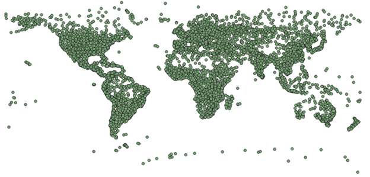

Querying World Locations using PyQGIS
NSCC Centre of Geographic Sciences, Intro to Programming
November 2023

Project Description:
I wrote a program that can query and create a report based on the data in a shapefile of over 7000 points, each one corresponding to a different location on Earth. The user can select any number of points, and the program will query the points and categorize the selected points by what quadrant of the world they are in, and return the sum of the populations of the points in each quadrant. The program also returns the points with the highest and lowest populations, as well as what quadrant they lay in.
The documentation describing the program flow can be downloaded here:
The source code, QGIS project, and shapefile required to run the program can be downloaded here:
Software Used:
- Microsoft Visual Studio Code
- QGIS
Data Sources:
- Esri: Places of the World shapefie